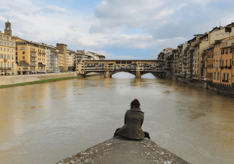

Solo travel doesn’t have to be scary, just ask this University of Texas student
Vanessa Buelna spent part of her summer in Prague, Czech Republic with other students. But she couldn’t wait for the program to end — because that’s when her solo travels could begin.
"I'm a very independent person,” said Buelna, a senior at the University of Texas at Austin. “I just like to do things on my own, explore new places."
On July 8, Buelna went to Copenhagen, Denmark. She spent four days there before road tripping through Holland, visiting three cities in Poland for four days each and visiting Portugal for a full week. After landing in the U.S., Buelna bounced around different states to visit friends and extended family before finally returning to Austin in August. She said with sufficient time to plan, she’d do it all again.
"I started researching maybe like five, six months prior,” Buelna said. “It kind of engulfed me. I'd rather just sit at home and plan my trip than do pretty much anything else.”
Using Google reviews, Buelna said she was able to determine which hostels were open and if there were recent bed bug outbreaks or other negative incidents. She said she also vetted hostels with TikTok, where she watched quick videos to see the insides of the bedrooms, bathrooms and lobbies.
Buelna packed with equal precision. She said she carried a backpack and a carry-on, used packing cubes and brought only a “capsule wardrobe” – a few basic clothing items, such as a plain white shirt and jeans, that she could mix and match to create new outfits.
"That was my little life for the summer," Buelna said.
Before her trip, Buelna said many people told her to keep a journal. While she found it difficult to take the time out of her adventures, Buelna said she made an effort to journal frequently, even if it meant dedicating a train ride or flight to writing.
“Sometimes things would happen where I was like, I will be damned if I don't remember this,” Buelna said.
For aspiring solo travelers, Buelna advised to save up before a big trip.
"There's going to be a lot of unexpectedness that happens," Buelna said.
Although this summer marked Buelna’s first long solo trip, she said she didn’t feel scared.
"Maybe a little bit in the beginning, but it's just like after that, I feel very independent and like it's kind of just like proving to yourself you can do it."
Looking to the future, Buelna said she’s excited about her plans to apply for a visa to live and work in the United Kingdom. She said she will continue exploring outside her comfort zone.
"Travel,” Buelna said. “Is about embracing the unknown and growing through it all."